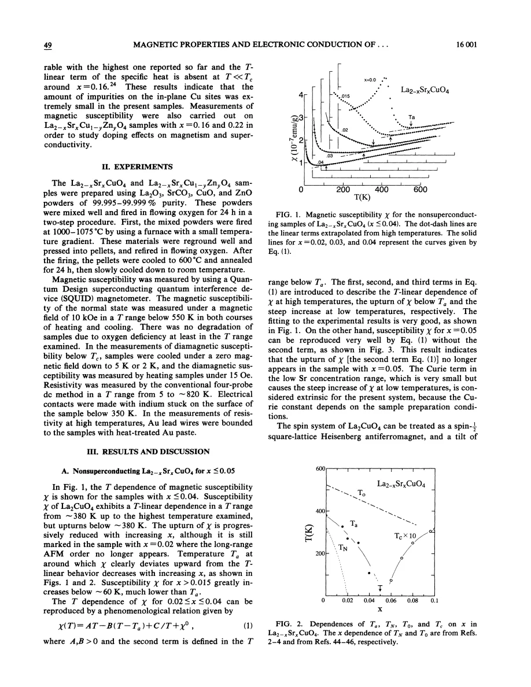
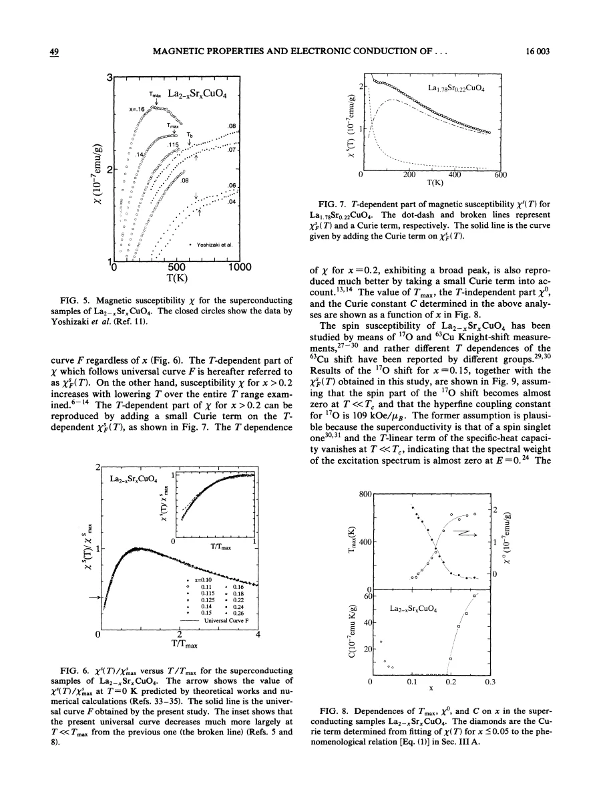
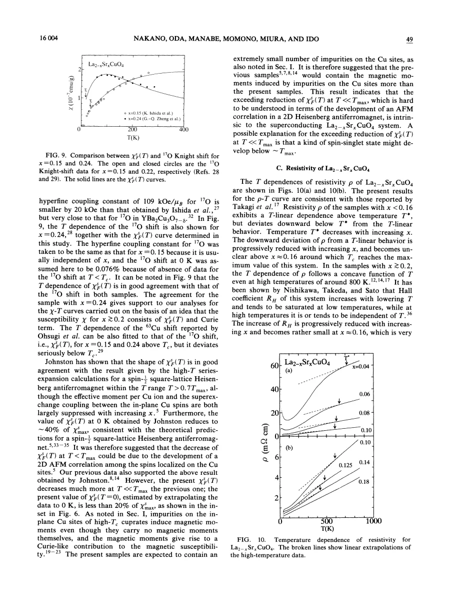
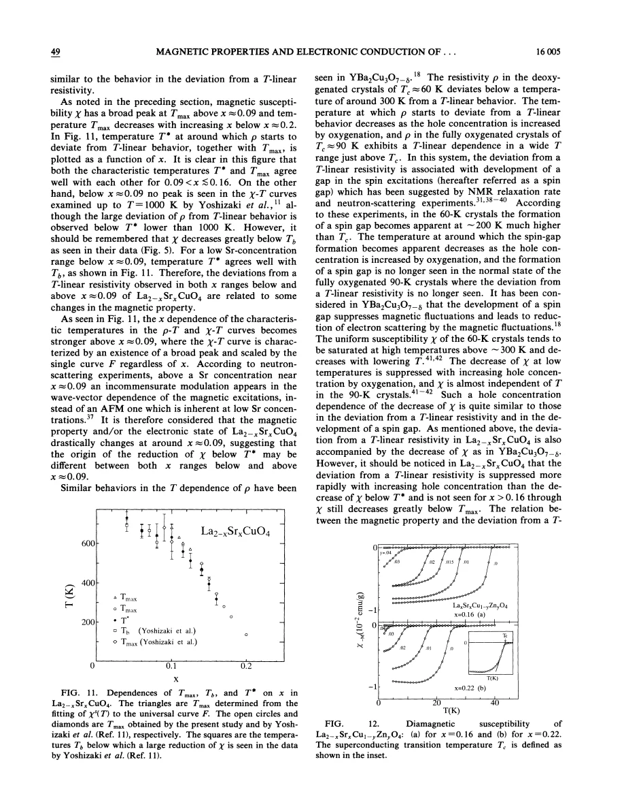
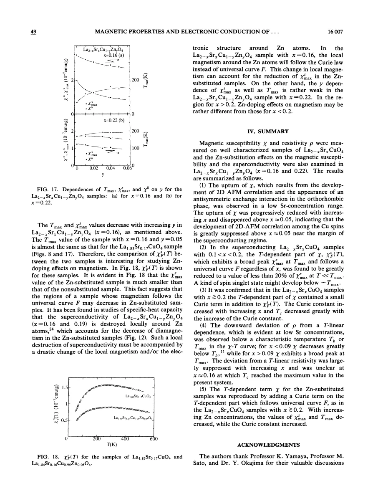

experiment · Nakano · supplied source 1994
Magnetic properties and electronic conduction of superconducting La2−xSrxCuO4
The supplied 1994 LSCO study separates a scaled host response from Curie tails, finds stronger low-temperature suppression than the earlier Johnston curve, and compares its crossover with transport without treating their doping dependence as identical.
The question: How do sample purity, hole doping and Zn substitution change susceptibility scaling and its relation to electrical resistance?
Before you start: the few terms you need
- Uniform susceptibility: static response at q=0
- Curie response: C/T from approximately free local moments
- Broad maximum: crossover feature, not necessarily a phase transition
- Knight shift: local hyperfine-weighted uniform spin response
- Transport crossover: deviation from a chosen high-temperature resistivity trend
See → explain → test
Understand it in four pictures.
Picture 1 / 4
Separate a rising tail from a falling host
Look for: Overdoped or Zn-substituted samples can gain a Curie contribution while their scaled host part still decreases on cooling.
Swipe across the picture to read every label, or enlarge it below.
- Scaled host χF
- Curie contribution
- Total response
Teaching source decomposition; no fitted susceptibility curve or microscopic spin map is reproduced.
The total upturn does not establish that the entire host is becoming more magnetic.
Picture 2 / 4
Compare the two historical scaling results
Look for: Nakano's extrapolated low-T host value is below 20% of its maximum, compared with roughly 40% in the earlier interpretation.
Swipe across the picture to read every label, or enlarge it below.
- Earlier normalized result
- Present supplied result
Teaching comparison of 1989 and 1994 analyses. Low-T normal-state limits are extrapolated, not direct T=0 measurements.
Shared high-temperature scaling does not guarantee the same low-temperature limit.
Picture 3 / 4
Match temperature scales carefully
Look for: The downward resistivity deviation tracks susceptibility crossover scales over a stated underdoped range.
Swipe across the picture to read every label, or enlarge it below.
- ρ bends below high-T line
- Compare T* with Tmax or Tb
- Related magnetic crossover
Historical observational correlation; it is not proof of a unique scattering or pseudogap mechanism.
Their agreement is informative, but near optimal doping χ still falls after the transport deviation becomes unclear.
Picture 4 / 4
Use Zn as a controlled disturbance
Look for: Zn lowers Tc and increases C while reducing the scaled host amplitude, especially at x=.16.
Swipe across the picture to read every label, or enlarge it below.
- Replace Cu by Zn
- Induce local response
- C grows; χF shrinks
- Compare x=.16/.22
Teaching source interpretation; electronic regions around Zn are inferred, not directly imaged.
A nominally spinless substitution can redistribute host magnetic response rather than add its own atomic spin.
Predict before revealing
The total χ rises on cooling after Zn substitution. What must be checked before concluding that the whole host susceptibility rises?
Choose an answer, then compare the reasoning.
The fitted total can rise because C/T grows while χF falls; the two contributions have different physical interpretations.
Read the answer
Whether the added Curie term masks a falling scaled host component The fitted total can rise because C/T grows while χF falls; the two contributions have different physical interpretations.
Go deeper Follow the full argument
High purity changes what can be inferred
Nakano and colleagues measure ceramic LSCO susceptibility and resistivity over a wide Sr range and examine Zn substitution at x=.16 and.22. They stress that even nominally nonmagnetic impurities on Cu sites can induce host moments and a Curie contribution. High Tc and the absence of a residual low-temperature T-linear heat-capacity term near optimal doping are cited as indicators of clean samples, rather than direct atom-by-atom purity maps. Their own normal-state SQUID measurements use 10 kOe up to 550 K; resistivity extends to roughly 820 K. Data reaching 1000 K in the susceptibility comparisons come from cited Yoshizaki measurements. Low-temperature diamagnetic transitions use a separate low-field protocol. In normal-state superconducting-sample comparisons they omit data below 50 K to avoid superconducting fluctuation effects. This makes the eventual zero-temperature host limit an extrapolation, not a directly observed normal state.
The lightly doped upturn has a separate origin
For small x, the measured susceptibility contains a broad upturn linked to antisymmetric exchange in the orthorhombic crystal. That contribution is distinct from the small, steep low-temperature Curie tail, which the authors regard as extrinsic in this dilute-Sr regime because its coefficient depends on preparation. The structural distortion enables a coupling between uniform response and staggered AF correlations. The upturn disappears near x=.05 although the orthorhombic distortion has decreased only modestly. The paper therefore interprets the reduction primarily through weakened two-dimensional AF correlations rather than loss of orthorhombicity alone. This is an inference within its exchange model. Disappearance of this particular contribution does not mean that every AF correlation at every momentum is zero throughout the superconducting compositions. Nor should the word ferromagnetic used for the parent upturn be confused with an independently established bulk ferromagnetic phase.
Scaling survives, but the low-temperature shape changes
For samples with a broad maximum, subtracting a constant offset and rescaling by Tmax and the host maximum collapses the response onto a common curve. At x around.20 and above an added C/T term is needed; its coefficient increases with further Sr doping. This piece must be removed before identifying the host curve. The new normalized host response extrapolates below 20% of its maximum at low temperature, compared with roughly 40% in Johnston's earlier AF-like analysis. The authors attribute part of the earlier difference to impurity-induced moments and suggest an additional spin-singlet tendency to explain suppression beyond their Heisenberg comparison. That suggestion is distinct from the measured corrected curve. Oxygen Knight-shift data support the extracted temperature dependence using assumed hyperfine coupling and shift offsets; the microscopic check constrains the separation but is not an assumption-free absolute susceptibility calibration.
Transport agrees over one range and separates over another
The resistivity is compared with a high-temperature linear extrapolation. Its downward deviation defines T*. For approximately.09<x<.16 this crossover agrees well with susceptibility Tmax. At smaller x, cited susceptibility data show a stronger fall below Tb without a visible maximum even up to 1000 K; the transport crossover then corresponds to Tb rather than an invented peak. These correlated scales suggest a relation between magnetic response and scattering. They do not identify one unique microscopic process. Near optimal doping the downward resistivity deviation becomes weak or unclear while susceptibility still decreases on cooling. More overdoped resistivity is curved even at high temperatures. The paper explicitly says the LSCO relation is more complicated than the YBCO analogy it discusses. A single boundary drawn through all these regimes would conceal its most useful qualification.
Zn changes the balance, not just the total signal
For Zn-substituted x=.16 samples, increasing Zn lowers Tc, increases the fitted Curie coefficient and reduces both Tmax and the scaled host amplitude. The corresponding changes at x=.22 are weaker. An especially useful comparison holds Tmax approximately similar between a Zn-substituted sample and a differently Sr-doped unsubstituted sample: their amplitudes still differ substantially. Matching a crossover temperature therefore does not guarantee that the same amount of material contributes to the scaled magnetic response. The authors propose that regions near Zn switch toward Curie-like behavior while superconductivity is locally suppressed, using thermodynamic work as supporting context. This spatial picture remains inferred. It links naturally to the separate Y124 recovery analysis, but the bulk LSCO Curie coefficient and Y124's host/impurity NQR fit parameters are different observables and should not be assigned one numerical value.
Translate the mathematics Key equations and symbol meanings
χ(T) = χ0 + χF,max F(T/Tmax) + C/T
Symbols: χ0: fitted temperature-independent offset; χF,max: maximum of the scaled host component; Tmax: host maximum temperature; C: Curie coefficient; F(1)=1.
Teaching form of the source's decomposition for overdoped or Zn-substituted samples. C/T is separated before the host is normalized; not every sample needs the same C.
u = T/Tmax; f(u) = χF(T)/χF,max
Symbols: u: reduced temperature; f: reduced host susceptibility after constant and applicable Curie terms have been removed.
A curve collapse compares shape after background and amplitude changes. The source's extrapolated low-T f is below.20 rather than the earlier roughly.40.
Δρ(T) = ρ(T) − (aT + b); Δρ < 0 below the identified T*
Symbols: ρ: measured resistivity; aT+b: high-temperature linear comparison; T*: temperature where the downward deviation becomes evident.
A teaching definition of the plotted transport comparison. Fit window and regime matter, and the deviation becomes unclear near optimal doping even while χ changes.
Kspin(T) ∝ Ahf χspin(T)
Symbols: Kspin: spin Knight shift; Ahf: hyperfine coupling; χspin: uniform spin response after offset assumptions.
The oxygen shift offers a local check on the temperature-dependent susceptibility. The paper assumes a coupling of 109 kOe/μB and different low-T offset information for the compared samples.
Read the evidence A guided look at the original figures

Open the full original page ↗

Open the full original page ↗

Open the full original page ↗

Open the full original page ↗

Open the full original page ↗
What this paper does—and does not—establish
- Historical 1994 experiment and interpretation, kept distinct from Johnston 1989 and later transport or spin-dynamics studies.
- The host/offset/Curie separation, Knight-shift calibration and extrapolated low-T curve use assumptions; spin-singlet and spatial-region explanations remain proposals.
- Own susceptibility reaches 550 K; the 1000 K comparisons cite other measurements. Normal-state low-T superconducting data are excluded or extrapolated.
- Fig. 9's high-doping plot/prose use x=.24 while its caption also states.22; the lesson does not treat that inconsistency as a second dataset.
Explain it back.
Try answering aloud before opening the explanation.
Is the below 20% low-temperature normalized value a direct T=0 normal-state measurement?
No. It is an extrapolation of the fitted host component, with low-T superconducting/fluctuation regions excluded.
Does T* track Tmax equally at every doping?
No. At low doping the comparison uses Tb, and near optimal doping the resistivity deviation weakens while χ still falls.
Why can nominally spinless Zn produce C/T?
The substitution can induce magnetic moments in the correlated host environment.
Does disappearance of the dilute-Sr antisymmetric-exchange upturn prove all AF correlations vanish?
No. It constrains that contribution under the paper's model, not the entire momentum-dependent response.
Connect the next paper.
Source version, reading coverage and preservation
All nine supplied pages read, including complete body through page 8 and reference structure on page 9; all nine rendered pages inspected in contact sheets. Scaling, Curie decomposition, shift assumptions and transport comparison on pages 4–5 checked at full size.
Reviewed body pages: 1, 2, 3, 4, 5, 6, 7, 8. Cited high-temperature susceptibility, Knight shifts, neutron spectra and specific-heat studies are not independently re-read or regenerated.
Original file retained byte for byte. SHA-256: 362bc4d673427251c5007d0685bdde816b06f68ad0a6b4dafe0609b214e7daf9
Filename: PRB - Nakano - Magnetism and electronic conduction in LSCO - 1994.pdf.